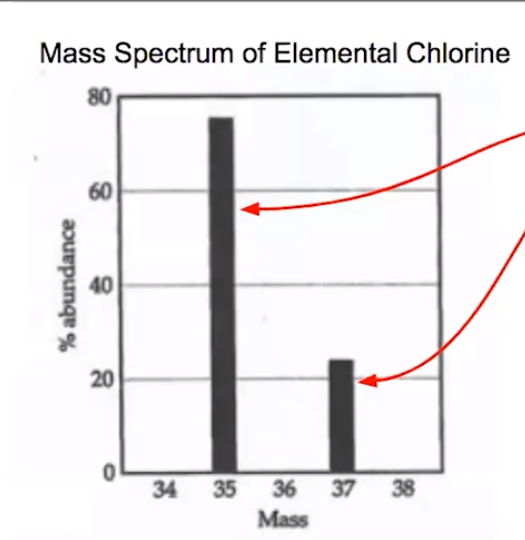

What is mass spectroscopy?
{width="3.6354166666666665in" height="3.75in"}
This means that ~80% of all particles of chlorine weigh 35 amu and ~20% of all particles of chlorine weigh 37%
Height: relative abundance
X axis: each isotope and its mass number
Therefore, the average atomic mass is somewhere in between
<!-- -->
To find average atomic mass: multiply each isotope by its relative abundance and add them all